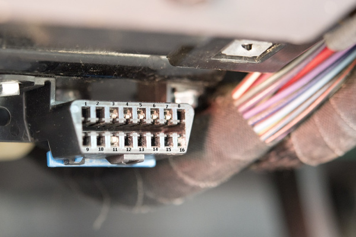

CAN Bus Applications
Introduction
History
- Before CAN point to point wiring
- 1986: Bosch developed the CAN protocol
- 1991: Published CAN 2.0 (CAN 2.0: 11 bit, 2.0B: 29 bit)
- 1993: CAN adapoted as ISO 11898 standard
- 2003: ISO 11989 becomes standard series
- 2012: CAN FD 1.0 (flexible data rate upto 5 mbps) released
- 2015: CAN FD is standardized (ISO 11898-1)
Why CAN bus ?
Simple and low cost
ECU (Electronics control units) communicate with each other using simple digital signal via 2 wire bus system. Reducing weight, cost, maintaince.
Centralized
Provides only one point of entry (2 wire bus) for all ECU to communicate with each other. For data, diagnostic, configuration and updates.
Robust
- Immune to electrical and electromagnetic interference
- Digital signal levels
- Inbuilt error detection and retry mechanism
- Inbuild error handling
- Ideal for safety critical applications
Efficient
CAN messages are priority base and provide fix or measureable latencies.
CAN properties
Message prioritization
Guarnted latency time
Configuration flexibility
system wide data consistency
multimaster
Error detection and Signalling
Automatic retransmission of corrupted messages
Distinction between temporary and permanant failures of node
Structure of CAN
Layered structure

CAN Bus topology
CAN Bus topology
CAN frames
Dominant vs recessive bit
Bus values
The bus can have one of two complementary logical values: ’dominant’ or ’recessive’. During simultaneous transmission of ’dominant’ and ’recessive’ bits, the resulting bus value will be ’dominant’.
Standard CAN frame

- SOF Start of frame. Dominant 0 tells other nodes intend to talk.
- ID Frame Identifier
- RTR Requesting data from other nodes.
- Control Data Length of payload field.
- Data Contains payload
- CRC
- ACK
- EOF End of CAN frames
CAN Waveforms
Extended CAN frame

Bit Stuffing
Bit Stuffing
In order to distingush data frame from bus idle frame CAN actively insert/stuff bit in can payload. When ever CAN node sends 5 bits of same logic level (dominant or recessive) it must send one bit of opposite level. This extra bit is automatically removed by CAN receiver at data link layer.
Bus arbitration
Arbitration
During arbitration every transmitter compares the level of the bit transmitted with the level that is monitored on the bus. If these levels are equal the unit may continue to send. When a ’recessive’ level is sent and a ’dominant’ level is monitored (see Bus Values), the unit has lost arbitration and must withdraw without sending one more bit.
Wired AND logic
For example, in case of a wired-AND implementation of the bus, the ’dominant’ level would be represented by a logical ’0’ and the ’recessive’ level by a logical ’1’. Physical states (e.g. electrical voltage, light) that represent the logical levels are not given in this specification.
Safety
Error Detection
- Monitoring transmission and avoid corruption.
- Cyclic Redundany Check
- Bit Stuffing
- Message Frame Check
Fault Confinement
Defective nodes are switched off.
Error Handling
Bit Errors
A unit that is sending a bit on the bus also monitors the bus. A BIT ERROR has to be detected at that bit time, when the bit value that is monitored is different from the bit value that is sent.
Stuff Error
A STUFF ERROR has to be detected at the bit time of the 6th consecutive equal bit level in a message field that should be coded by the method of bit stuffing.
CRC Error
A STUFF ERROR has to be detected at the bit time of the 6th consecutive equal bit level in a message field that should be coded by the method of bit stuffing.
Acknowledge Errors
Detected by a transmitter whenever it does not monitor a ’dominant’ bit during the ACK SLOT
Application Layer standards
SAE J1939
Is standard used in heavy-duty vehicles like - Mining vehicles - Military vehicles - Agriculture
Features
- Support 29 bit extended ID
- 250K baud rate
- Parameter Group Numbers (PGN) (standard and use specific)
- Suspect Parameter Number (SPN)
- Dynamic 8 bit address assignment to nodes.
- Data conversion is possilbe across multiple manufacturers
Parameter Group Number (PGN)
It is 18 bit subset of 29 bit-extended CAN ID.
OBD2
OBD2
On board diagnostics is a self-diagnostic and reporting. It provide diagnostic trouble codes (DTCs) and real time vehicle parameters data using standard ports.

OBD2 frame

- Identifier: Its a standard 11 bit reserved ID used for request (0x7DF) and response (0x7E8 to 0x7EF)
- Length of transmitting data (3-6)
- Mode (services)
- PID Standard parameter identifier
- ABCD Payload
Modes
- 01 Show current data
- 02 Show freeze frame data
- 02 Show stored DTC
- 04 Clear DTC
- 06 Test results for system monitoring
- 07 Show pending DTC
- 08 Control operation on vehicle
- 09 Request vehicle information (VIN )
- 0A Permananent DTC
UDS
UDS
Unified Diagnostic Service (UDS) is a communication protocol used to diagnost, firmware update and routine testing.
The UDS protocol (ISO 14229) is standardizedc across manufacturers. It is a client server protocol with test tool being client and ECU being server.
UDS Services

Use cases - Read diagnostic codes - Read vehicle parameters - Diagnostic - Update firmware and settings - Secure access
UDS request frame

- PCI Protocol Control Information used for interpreting frame type.
- Service ID
- Sub function ID
- Request Data parameter
Positive UDS Response frame
For positive response 0x40 will be added to request service ID followed by data payload.
Negative UDS Response frame

Negative UDS Response frame
Error code is always fix 0x7F along with rejected Service ID. Based on Service ID negative response code field will identify error types.
Negative UDS Response frame

UDS Authentification
For security reasons critical UDS services like firmware downloading need authentification.
Access Control
- When client request any higher session layer service
- Server sends a ‘seed’ (random numeric key) to client.
- Client then based on seed value calculate key using propriotary algorithm shared by server (ECU manufacturer).
- Send back key to server.
- Server then compare the key to its own key calculated based on same seed.
- If both key matches then server grant the access to client.
CAN ISO-TP
CAN ISO-TP
Classiscal and extended CAN support maximum 8 and 64 bytes in one communication frame. Diagnostic and firmware upgrade require larger payload. ISO-TP provide facility to extend CAN payload upto 4095 bytes using segmentation, flow control and reassembly.
Frame Types

Frame Control

MultiFrame communication

ISO Standard
ISO 11898 Standard
The CAN communication protocol, ISO-11898: 2003, describes how information is passed between devices on network and conforms to the Open System Interconnect (OSI) model.
ISO 11898 defines data link and physical layer only.
Application Layer
- CANOpen by CAN in Automation (CiA)
- KVASER CAN Kingdom by Kvaser
- DeviceNet by Rockwell automation # CAN Open ## CAN Open Is mostly used in industrial automation.
Software Tools
DBC Files
CAN DBC CAN database is a text file decribing how to decode raw CAN but data to physical values.
Virtual CAN network tools
Many python libraries can be used to simulate and test CAN bus on PC
import can
bus1 = can.interface.Bus('test', bustype='virtual')
bus2 = can.interface.Bus('test', bustype='virtual')
msg1 = can.Message(arbitration_id=0xabcde, data=[1,2,3])
bus1.send(msg1)
msg2 = bus2.recv()
#assert msg1 == msg2
assert msg1.arbitration_id == msg2.arbitration_id
assert msg1.data == msg2.data
assert msg1.timestamp != msg2.timestamp
LIN
LIN
- Low cost alternative to CAN bus
- Mostly used for window, wiper, air condition low time constrained actuators
- Master slave configuration
- Single wirr with 1-20 Kbit/s
- Time triggered scheduling with guaranteed latency time
- Variable data length (2,4,8)
- Error detection
- Configuration
- 12 Voltage operating mode
- Sleep and wake support for power saving